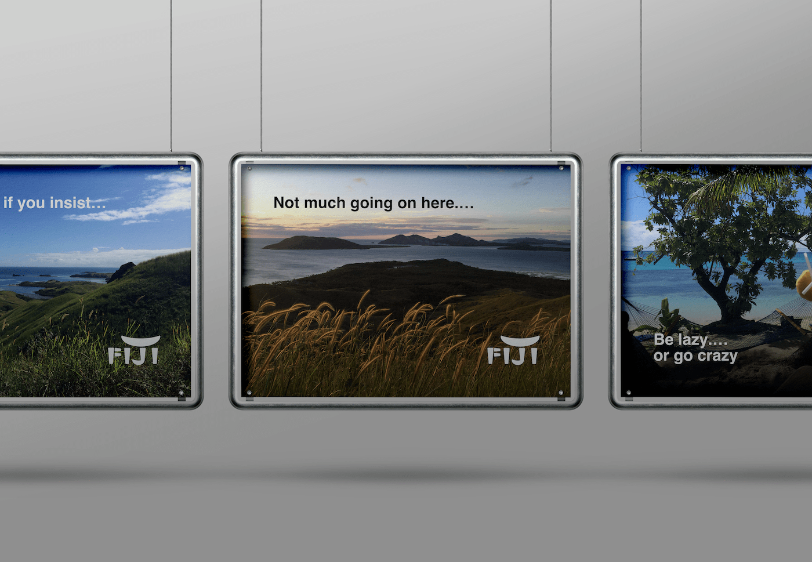
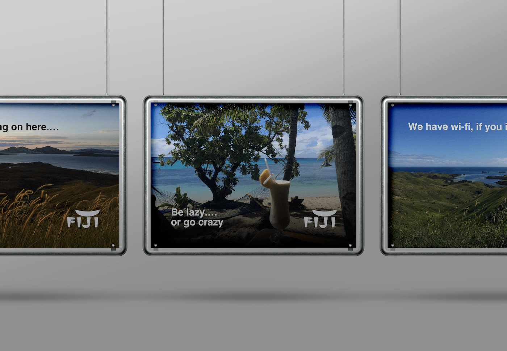
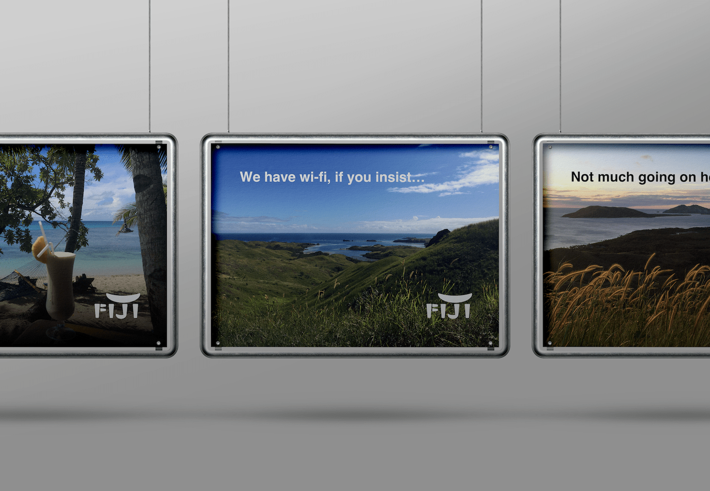

Marketing and Advertising
Fiji
Fiji is my favorite vacation spot. It is where I first gained the courage to learn scuba diving and I remember very well our first suba tip where I encountered an amazing coral mesh. The mesh was shaped like a purple sparkly globe and there were little fish swimming in and out of it.
This is my attempt to reduce the coral mesh and fish to their most simple form.
Blue Lagoon
I usually visit 3 islands at a time in Fiji, spending 3 or 4 nights at each island. Each time we visit we repeat one of our favorite islands, and add one new island. Blue Lagoon has been one island that we repeat each time.
Blue Lagoon before sunset.
Not much going on here...
Blue Lagoon Resort.
Be lazy or go crazy...
Blue Lagoon in the day.
We have wi-fi, if you insist...
A very simple view of genre information.